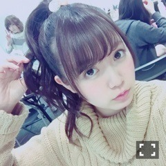

| 2016/02 29 Mon | ひめたん-0o0-その615 |
Samurai ELO 発売中！
前回の日記、いろいろと
抜けてるとこ多くて
ごめんなさい( ´ ･ω･ ` )
奥渋を裏渋って書いたり
BDライブで歌った
「あの日、僕は咄嗟に嘘をついた」
をリストに挙げてなかったり
最後途中で力尽きて終わってたり......。
以後、私が書いてる文章は
基本疑ってかかるように！！
さて、土日は京都で握手会でした～
13thラストだったんだね
来てくださった皆さんありがとう！
あたたかい言葉をたくさんいただいて
素敵な2日間になりました( ˇωˇ )
ちょっと振り返ってみよーう
◯全国握手会
嫉妬の権利、大好きな曲なのに
あまり披露する機会が少なかったなあ～
サンエトもこれでおしまいだもんな。
色々と寂しい気持ちになりました
握手会は北野・山崎・中元レーン。
長い時間お待たせしてしまったようで
疲れたよね( ´ ･ω･ ` )ごめんね
たくさんの方が会いに来てくださって
嬉しかったです！
初めましての方も多かった～
2人の推しの方も
私とも仲良くしてくださってありがとう。
ひめたんファンはもちろんありがとう♡
冬の武道館の感想や
次のアンダーライブツアー期待してる！
って声をたくさんいただきました
3人とも出演するからね。
5歳児リクエスト多かったから
いっぱいやったわよ
きいちゃんはびっくりしてて
ザキさんは「本物だ！」って。笑
◯個別握手会
1,2部 ボウリング大会の着ぐるみ

3,4部 らじらーでお約束したパンツスタイル

見て左上！若月！写り込み！流石！
46時間TV、乃木坂工事中、雑誌の感想や
らじらーの小ネタなどなど
いろんなことした⊂( ˆωˆ )⊃
京都は特に久々なので
お話したいことがたくさんあって
最後まで楽しい握手会でした。
会えない間も全部チェックして
応援してくださってたんだな～っていうのが
凄く、凄く伝わってきました！
考えてみれば13thで初めて
京都も4部参加できるようになって
今まで以上に長い時間過ごせたなあ～と。
14thでは5部になるので
きっとさらに濃ゆい、素敵な握手会に
なると思って楽しみにしてます( ˆωˆ )
日曜の夜はらじらー！サンデー
次回のゲストは
声優アーツに羽多野渉さん、
乃木坂から永島聖羅ちゃんが来てくれます。
今週のおたよりテーマは
・「せ」「い」「ら」作文
・卒業前にやりたいことやりたかったこと
・マッスル中元のラブリー・パンプアップ♡
らりんへの応援メッセージや
レギュラーコーナーへのおたよりも
お待ちしてます。
メールはこちらから！
あの、前回、
原宿Tシャツとか言いましたけど
どこでゲットできるかわからないんで
その時は普通の服で行かせてください
ほんと期待しないでください。笑
さらにもうひとつ。
NHKラジオ第一
「キャンパスライブ＠福島SP」に
中田・ちはる・中元の3人で
ゲスト出演させていただきます！
東日本大震災から5年。
福島市からの公開生放送です。
らじらー！と同じチャンネルで
3月12日(土)17:05～18:50
生放送でお送りします。
そして、この番組の
観覧募集をおこなっています
締め切りは3/2(水)午前10時までです。
詳しくは公式サイトをご確認ください！
金曜日はソニレコ配信日。
2月ラスト分配信！
今週もKちゃんのスタジオライブがあります
チャンネル登録はこちらから( ˆωˆ )
～お知らせ～
2/29 ブブカ
3/3 オトナヘノベル(3/8再放送)
3/8 BOMBER-E Pナイト
3月もう少しお知らせできるかな～

3/3(木) 19:25～19:54
NHK Eテレ「オトナヘノベル」
SNSにおける"逆炎上"をテーマにした
再現VTRに出演します！
さらに新しい告知をひとつ( ˆωˆ )
3/27オンエア「のぎえいご」に
ゲスト出演します！
4人がいつも頑張ってる現場に
呼んでいただけたことも嬉しかったし
ひらりーとも仲良くなれました～♪
ドランクドラゴン鈴木さんとも
マサカメTV、のぎえいごに
この前のカラオケ大会にと
たくさんお世話になっております( ˆωˆ )
あーっともうひとつ。
昨日の乃木のので
14thアンダー曲「不等号」が
解禁になりました！
またもダンスナンバーになりそうです
ライブでみると印象変わるんだろうなあ
是非観ていただきたい！
あ～花粉症辛い～＊
(＊´・ω・＊)
コメント(1005)
2016/02/29 23:42